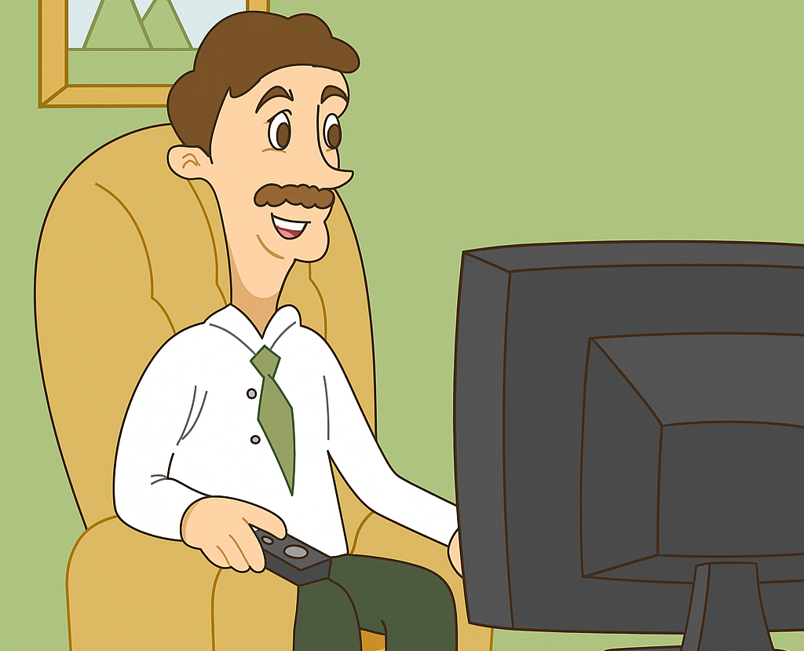

Manden, der så for meget TV
Denne hjemmeside dykker ned i den moderne nødsituation: når underholdningen overtager hverdagen, og virkeligheden bliver en pause mellem reklameblokke.
Se mere

Emergency! Har du også fået firkantede øjne?
Denne hjemmeside dykker ned i den moderne nødsituation: når underholdningen overtager hverdagen, og virkeligheden bliver en pause mellem reklameblokke.
Se mere
Sidder du med samme problem, som manden. Føler du dig fanget bag TV skærmen, og kan langsomt mærke, at dine øjne bliver mere firkantede, og at andre daglige gøremål bliver udsat. Få hjælp fra eksperter.
Se mere
Han skulle bare se nyhederne – men endte med at se alt. En stille tirsdag blev starten på et TV-maraton uden ende.
Fra samlingspunkt til skillevæg. Engang samlede fjernsynet familien – nu holder det os adskilt, hver i vores egen kanal.

De advarede os allerede i 50’erne. For meget fjernsyn ville give firkantede øjne. De havde måske mere ret, end de selv vidste.